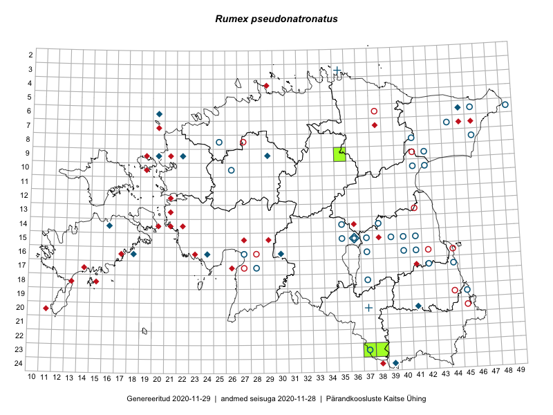

Rumex pseudonatronatus
Uuendatud: 2016-12-02
Kaardile koondatud taksonid: Rumex pseudonatronatus Borbás

Kaart põhineb 9 vaatlusel. Taksonit on leitud 9 ruudust.
Viited andmebaasikirjetele
- Peedu Saar: 2015-07-04: 18-45: ala
- Peedu Saar: 2015-07-04: 18-44: ala
- Meeli Mesipuu, Timo Luhamäe: 2015-06-12: 14-37: ala
- Meeli Mesipuu, Thea Kull, Eerik Leibak: 2014-06-09: 24-39: ala
- Rein Kalamees, Eerik Leibak: 2016-06-16: 23-38: ala
- Mari Metsoja, Eerik Leibak: 2016-07-21: 10-33: ala
- Toomas Kukk, Sander Laherand: 2016-08-30: 06-30: ala
- Helle Mäemets, Thea Kull: 2016-07-04: 16-24: ala
- Jaak-Albert Metsoja, Mari Metsoja: 2016-07-06: 09-23: ala